Against the Grain Community

Sanctuary Kitchen is a social enterprise and culinary training program in Greater New Haven that provides professional development and employment for immigrants and refugees. The program features globally-inspired cuisine prepared by chefs from Afghan, Sudanese, Mauritian, Nepali, Iraqi, and Syrian backgrounds — offering catering services, above-market wages, and hands-on culinary training with stipends. Through the power of food, Sanctuary Kitchen fosters intercultural understanding and creates real economic opportunity for New Haven's newest residents.
En españolSanctuary Kitchen es una empresa social y programa de capacitación culinaria en el Gran New Haven que brinda desarrollo profesional y empleo a inmigrantes y refugiados. El programa presenta cocina de inspiración global preparada por chefs de origen afgano, sudanés, mauriciano, nepalés, iraquí y sirio, ofreciendo servicios de catering, salarios superiores al mercado y capacitación culinaria práctica con estipendios. A través del poder de la comida, Sanctuary Kitchen fomenta la comprensión intercultural y crea oportunidades económicas reales para los residentes más nuevos de New Haven.
Visit Website